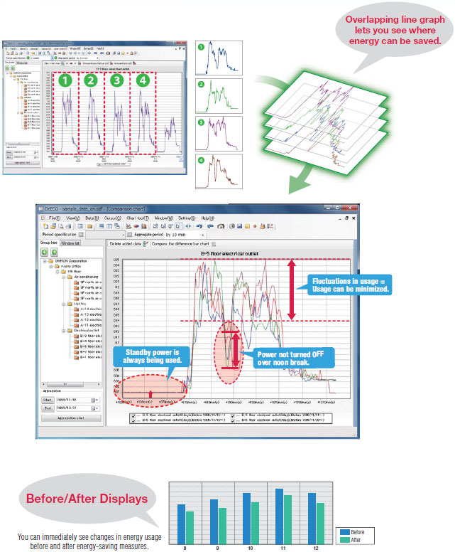
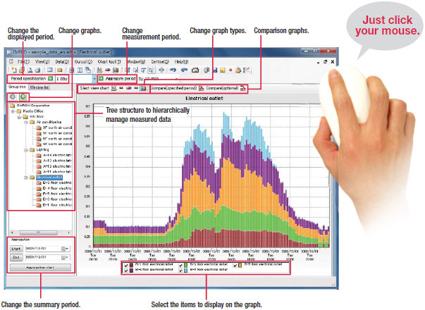
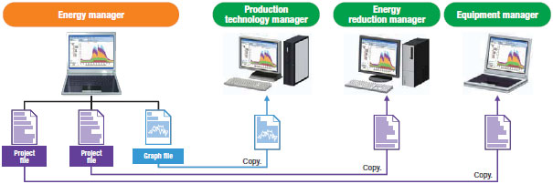
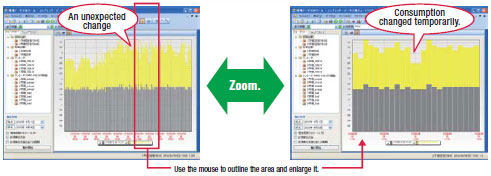
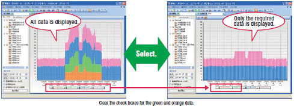
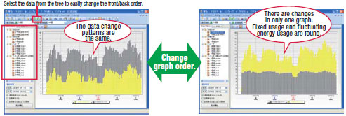
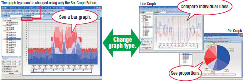
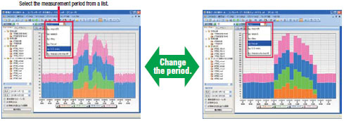
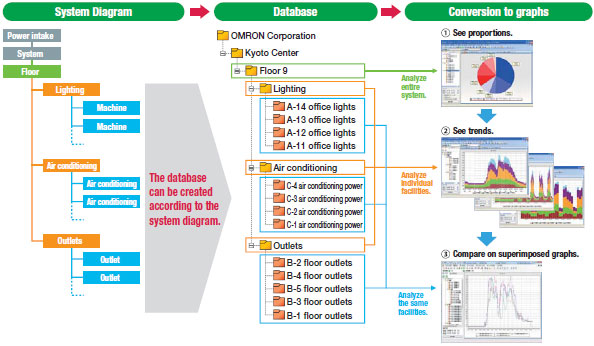
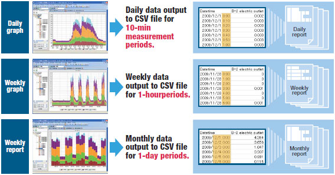

A new feature lets you Comparison graphs.
Building Automation
Industrial Automation
Power Automation & Safety


Bangladesh Distributor
EWS-DE10
Energy Savings Analysis Software

Find wasted energy with simple operations.
about this Product Family
Related Contents
- Energy Conservation Support / Environment Measure Equipment
- Monitoring / Analyzing Software
- Features
- Lineup
- Specifications
- Dimensions
- Catalog
last update: December 19, 2013
Dr. ECO is a simple, easy-to-use Energy Savings Analysis Software.
It will help you reduce energy usage and simplify energy data analysis.
1. Instantly Find Wasted Energy on Graphs
Overlapping line graph

2. Easily Alter Graph Displays as Required
You can take advantage of many graph displays with a click of the mouse.
Basic Window of Dr. ECO

Share Any Number of Graphs with a Viewer Edition

Graph files and project files can be copied and used on a Viewer Edition.
Functionality is restricted.
Other Features
Zooming

Just outline the area to be analyzed with the mouse to zoom in or out.
This allows you to see details of suspicious parts of the graph.
Selecting

You can select the data to display simply by selecting check boxes.
Hide unnecessary data to find suspicious parts of the required data.
Changing Graph Order

You can change the front/back order of superimposed graphs.
Changes can be correctly seen by changing the order of the data.
Changing Graph Type

You can switch to a line, pie, or bar graph with a single button.
Changes can be correctly seen by changing the graph type.
Changing the Period

You can change the display time axis to months, weeks, days, hours, or measurement units.
The period can be set for the interval to view for use in reports.
3. Easy Data Management
Manage expanding volumes of energy data in a hierarchical database.
With a single database you can analyze according to different levels in the hierarchy and link to a system diagram.

Easier Preparation of Reports
You can convert graphs directly to CSV files according to the measurement period.

last update: December 19, 2013